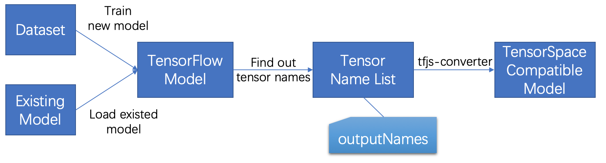
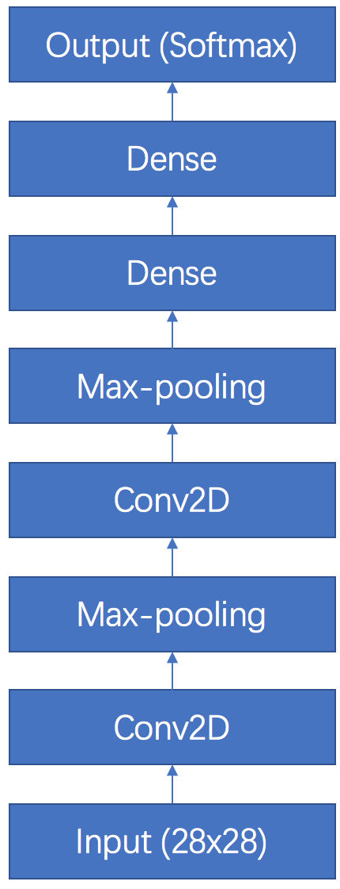
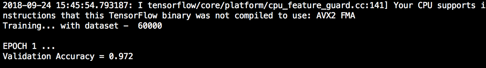
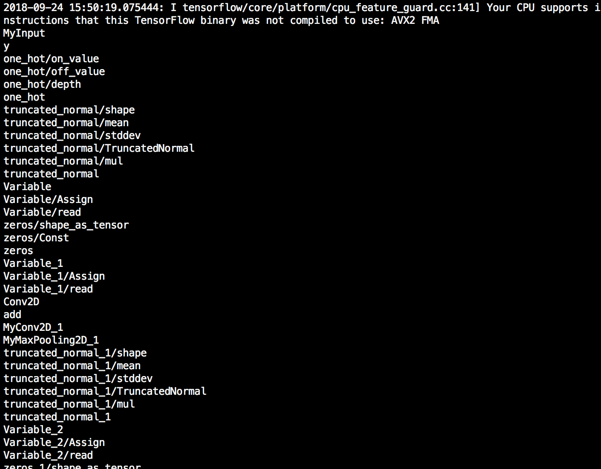
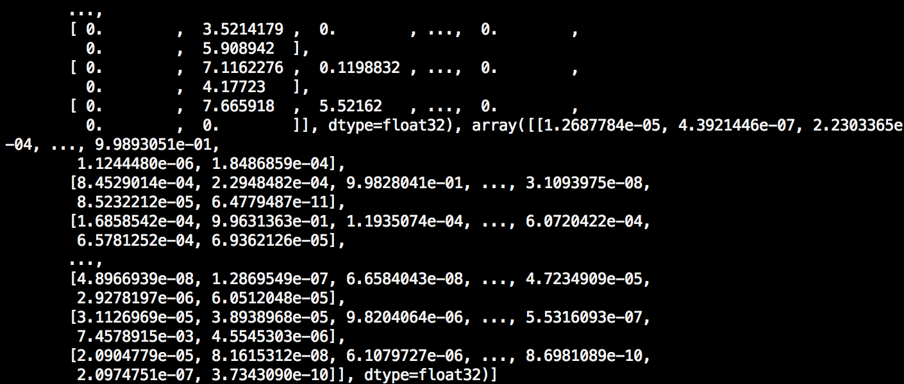

In the following chapter, we will introduce how to prepare a TensorFlow model
(saved model, frozen model and checkpoint) before applying TensorSpace.
Here is the list of sample files we are using for the following tutorial:
filter_center_focus
tensorflow_create_model.py
filter_center_focus
tensorflow_load_model.py
filter_center_focus
tensorflow_conversion.py
filter_center_focus
convert_tensorflow_saved_model.sh
filter_center_focus
convert_tensorflow_frozen_model.sh
filter_center_focus
[all model files
For the tutorial, we use Python 3.6.5 and the following libraries:
import tensorflow as tf
import numpy as np
from tensorflow.contrib.layers import flatten
from sklearn.utils import shuffle
mnist = tf.keras.datasets.mnist
wb_sunnyNote:
- filter_center_focus The core libraries are tensorflow and numpy.
- filter_center_focus tf.keras is used to provide dataset only.
- filter_center_focus sklearn.utils is used for shuffle only.
It is also required to install
tfjs-converter
(it is a tool from TensorFlow.js):
$ pip install tensorflowjs
In general, the preprocess of a TensorFlow model is:

Fig. 1 - Steps to preprocess a TensorFlow model
filter_center_focus
1. Train/Load a model
filter_center_focus
2. Find out tensor names
filter_center_focus
3. Convert to TensorSpace compatible model
It is different from the preprocessing of a Keras or tf.Keras model: we don't need to encapsulate
an intermediate TensorFlow model. All we want is to catch the correct corresponding
tensor names and convert original model to TensorFlow.js compatible model
directly by tfjs-converter.
wb_sunnyNote:
- filter_center_focus The collected tensor names are stored as a list which is used as outputNames in the TensorSpace.
1 Train/Load a model
1.1 Train a model
If you do not have start to construct any model, let's build a LeNet by TensorFlow together~
We use the LeNet with MNIST dataset as an example for the process, which is similar to the construction
from sujaybabruwad/LeNet-in-Tensorflow.
First we have to reshape the input dataset to the required size:
# Raw input & normalization
(x_train, y_train),(x_test, y_test) = mnist.load_data()
x_train, x_test = x_train / 255.0, x_test / 255.0
# Match dimensions
x_train = x_train.reshape((-1, 28, 28, 1)).astype(np.float32)
x_test = x_test.reshape((-1, 28, 28, 1)).astype(np.float32)
# Add padding to 32x32
x_train = np.pad(x_train, ((0,0), (2,2), (2,2), (0,0)), 'constant')
x_test = np.pad(x_test, ((0,0), (2,2), (2,2), (0,0)), 'constant')
Next, based on the structure of an LeNet_v5:

Fig. 2 - LeNet structure
we should have 2 Conv2D+MaxPooling together with 3 dense layers. The model is implemented like:
def LeNet_5(x):
# Convolutional Layer. Input = 32x32x1, Output = 28x28x1.
conv1_w = tf.Variable(
tf.truncated_normal(
shape=[5, 5, 1, 6], mean=0, stddev=0.1))
conv1_b = tf.Variable(tf.zeros(6))
conv1 = tf.nn.conv2d(
x, conv1_w, strides=[1, 1, 1, 1], padding='VALID') + conv1_b
conv1 = tf.nn.relu(conv1, name="MyConv2D_1")
# Pooling Layer. Input = 28x28x1. Output = 14x14x6.
pool_1 = tf.nn.max_pool(
conv1, ksize=[1, 2, 2, 1],
strides=[1, 2, 2, 1], padding='VALID',
name="MyMaxPooling2D_1")
# Convolutional. Output = 10x10x16.
conv2_w = tf.Variable(
tf.truncated_normal(
shape=[5, 5, 6, 16], mean=0, stddev=0.1))
conv2_b = tf.Variable(tf.zeros(16))
conv2 = tf.nn.conv2d(
pool_1, conv2_w, strides=[1, 1, 1, 1], padding='VALID') + conv2_b
conv2 = tf.nn.relu(conv2, name="MyConv2D_2")
# Pooling. Input = 10x10x16. Output = 5x5x16.
pool_2 = tf.nn.max_pool(
conv2, ksize=[1, 2, 2, 1],
strides=[1, 2, 2, 1], padding='VALID',
name="MyMaxPooling2D_2")
# Flatten. Input = 5x5x16. Output = 400.
fc1 = flatten(pool_2)
# Fully Connected. Input = 400. Output = 120.
fc1_w = tf.Variable(
tf.truncated_normal(
shape=(400, 120), mean=0, stddev=0.1))
fc1_b = tf.Variable(tf.zeros(120))
fc1 = tf.matmul(fc1, fc1_w) + fc1_b
# Activation.
fc1 = tf.nn.relu(fc1, name="MyDense_1")
# Fully Connected. Input = 120. Output = 84.
fc2_w = tf.Variable(
tf.truncated_normal(
shape=(120, 84), mean=0, stddev=0.1))
fc2_b = tf.Variable(tf.zeros(84))
fc2 = tf.matmul(fc1, fc2_w) + fc2_b
# Activation.
fc2 = tf.nn.relu(fc2, name="MyDense_2")
# Fully Connected. Input = 84. Output = 10.
fc3_w = tf.Variable(
tf.truncated_normal(
shape=(84, 10), mean=0, stddev=0.1))
fc3_b = tf.Variable(tf.zeros(10))
logits = tf.matmul(fc2, fc3_w) + fc3_b
return logits
wb_sunnyNote:
- filter_center_focus We put a name property for the tensor that we want to apply TensorSpace later. A specified name can speed up the process of creating outputNames list.
- filter_center_focus You may notice that we do not mark the tensor exactly in the tensor for the core action. For example, we don't put a name in the tf.nn.conv2d, but mark tf.nn.relu as the MyConv2D_*. The reason is that our desired output of a "Convolution Layer" is the result of the activation function, which provides a better visualization.
- filter_center_focus We only have 2 dense (or fully connection) tensors in the function. The last Softmax dense will be used for training, so we treat it a little different.
After building up the structure, let's train the model:
x = tf.placeholder(tf.float32, shape=[None,32,32,1],name="MyInput")
y = tf.placeholder(tf.int32, (None), name="y")
one_hot_y = tf.one_hot(y, 10)
#Invoke LeNet function by passing features
logits = LeNet_5(x)
# All kinds different operations
#Softmax with cost function implementation
cross_entropy \
= tf.nn.softmax_cross_entropy_with_logits_v2(labels=one_hot_y, logits=logits)
loss_operation = tf.reduce_mean(cross_entropy)
optimizer = tf.train.AdamOptimizer(learning_rate=0.001)
training_operation = optimizer.minimize(loss_operation)
correct_prediction = tf.equal(tf.argmax(logits, 1), tf.argmax(one_hot_y, 1))
accuracy_operation = tf.reduce_mean(tf.cast(correct_prediction, tf.float32))
# Declare an actual output without training label dependence
predict_outputs = tf.nn.softmax(logits, name="MySoftMax")
EPOCHS = 5
BATCH_SIZE = 128
# Evaluate function
def evaluate(X_data, y_data):
num_examples = len(X_data)
total_accuracy = 0
sess = tf.get_default_session()
for offset in range(0, num_examples, BATCH_SIZE):
batch_x, batch_y \
= X_data[offset:offset + BATCH_SIZE]\
, y_data[offset:offset + BATCH_SIZE]
accuracy = sess.run(accuracy_operation, feed_dict={x: batch_x, y: batch_y})
total_accuracy += (accuracy * len(batch_x))
return total_accuracy / num_examples
with tf.Session() as sess:
sess.run(tf.global_variables_initializer())
num_examples = len(x_train)
print("Training... with dataset - ", num_examples)
print()
for i in range(EPOCHS):
x_train, y_train = shuffle(x_train, y_train)
for offset in range(0, num_examples, BATCH_SIZE):
end = offset + BATCH_SIZE
batch_x, batch_y = x_train[offset:end], y_train[offset:end]
sess.run(training_operation, feed_dict={x: batch_x, y: batch_y})
validation_accuracy = evaluate(x_test, y_test)
print("EPOCH {} ...".format(i + 1))
print("Validation Accuracy = {:.3f}".format(validation_accuracy))
print()
test_accuracy = evaluate(x_test, y_test)
print("Test Accuracy = {:.3f}".format(test_accuracy))
wb_sunnyNote:
- filter_center_focus Don't forget to declare an extra Softmax tensor for the prediction output and give a proper name.
We can see some evaluation outputs like:

Fig. 3 - Training evaluations
1.2 Load a model
If you have already had a tensorflow model trained in hand, let's try to load the model.
We can load the model from a saved model, frozen model or a checkpoint:
with tf.Session(graph=tf.Graph()) as sess:
tf.saved_model.loader.load(
sess,
[tag_constants.SERVING],
'../models/tensorflow_model',
)
with tf.Session() as sess:
model_filename ='/PATH/TO/PB/model.pb'
with gfile.FastGFile(model_filename, 'rb') as f:
graph_def = tf.GraphDef()
graph_def.ParseFromString(f.read())
g_in = tf.import_graph_def(graph_def)
with tf.Session(graph=tf.Graph()) as sess:
dir_path = '../DIR/SAVE/CKPT/'
ckpt_name = 'lenet.ckpt'
saver = tf.train.import_meta_graph(dir_path + ckpt_name + '.meta')
saver.restore(sess, tf.train.latest_checkpoint(dir_path))
wb_sunnyNote:
- filter_center_focus If you are loading a model from Checkpoint, you have to dump the file to either SavedModel or FrozenModel. Since the tfjs-converter currently does not support the conversion from Checkpoint to TensorFlow.js directly.
- filter_center_focus You can try the conversion similar to:
with tf.Session(graph=tf.Graph()) as sess:
dir_path = '../DIR/SAVE/CKPT/'
ckpt_name = 'lenet.ckpt'
saver = tf.train.import_meta_graph(dir_path + ckpt_name + '.meta')
saver.restore(sess, tf.train.latest_checkpoint(dir_path))
graph = tf.get_default_graph()
# Pick input for SavedModel
x = graph.get_tensor_by_name("input/Placeholder:0")
# Pick output for SavedModel
add_8 = graph.get_tensor_by_name("add_8:0")
output_dir = '/OUTPUT/TO/DIR/'
tf.saved_model.simple_save(
sess, output_dir,
{"input":x},
{"output":add_8}
)
2 Find out tensor names
It is actually the key step of the preprocess. We have to find out proper tensor names for our model.
We can try to output all tensor names like:
for n in tf.get_default_graph().as_graph_def().node:
print(n.name)
You may get a lot, even the model is not that large. From the model we just built, we have 400+ tensors:

Fig. 4 - Tensor names
wb_sunnyNote:
- filter_center_focus Don't worry about every tensors, most of them are used as parameter or for training only. You only need to focus on the ones which are used for prediction.
- filter_center_focus If you trained a model by providing name properties, you can find them all quickly in the list, which indicates everything follows expectations.
- filter_center_focus If you try to use an existed model, it may require some knowledge of the model structure.
- filter_center_focus In most cases, if a tensor **"name"** is not specified while construction, it is related to the constructor of TensorFlow.
After we figured out the tensors we want, we have to put them in a name list:
output_names = ["MyConv2D_1", "MyMaxPooling2D_1", "MyConv2D_2", "MyMaxPooling2D_2",
"MyDense_1", "MyDense_2", "MySoftMax"]
We can have a quick test for the tensors:
graph = tf.get_default_graph()
x = graph.get_tensor_by_name("MyInput:0")
outputs = list(map(lambda on: graph.get_tensor_by_name(on+":0"), output_names))
print(sess.run(outputs, feed_dict={x:x_test}))
Fig. 5 - Multiple list outputs after preprocessing

Fig. 6 - Last list is the original output
wb_sunnyNote:
- filter_center_focus You have to add :0 for the output from the tensor object. If not, it returns the tensor object (i.e. rise exceptions).
- filter_center_focus Please save the name list which will be used as name list in TensorSpace.
3 Convert to TensorSpace compatible model
If everything so far looks good, we can use the following script to dump out a TensorFlow.js compatable model:
onn='MyConv2D_1,MyMaxPooling2D_1,MyConv2D_2,MyMaxPooling2D_2,MyDense_1,MyDense_2,MySoftMax'
tensorflowjs_converter \
--input_format=tf_saved_model \
--output_node_names=$onn \
--saved_model_tags=serve \
../models/tensorflow_model \
../models/json_models/tensorflow
wb_sunnyNote:
- filter_center_focus Please make sure you have installed tfjs-converter correctly.
- filter_center_focus If the model is a CheckPoint, you have to save it as a SavedModel or FrozenModel first, since the tfjs-converter does not support Checkpoint for now.
- filter_center_focus Select the input_format based on your model type.
- filter_center_focus Put name list as a parameter of the script (no extra space or quotes).
Fig. 7 - Saved model files
wb_sunnyNote:
- filter_center_focus
There are three types of file generated:
- flare One "tensorflowjs_model.pb" file which describe the structure of the model.
- flare One "weights_manifest.json" file which describe the weights manifest.
- flare Some weight files which contains actual weight values. The number of weight files is dependent on the size and structure of the given model.
- filter_center_focus For more detailed information about tfjs-converter, you can visit tfjs-converter.
If everything looks good, you shall be ready for the next step
- Load a TensorSpace compatible model